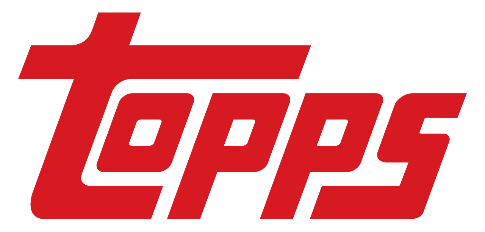
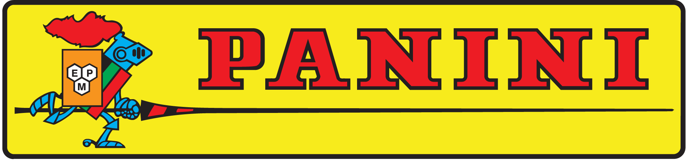
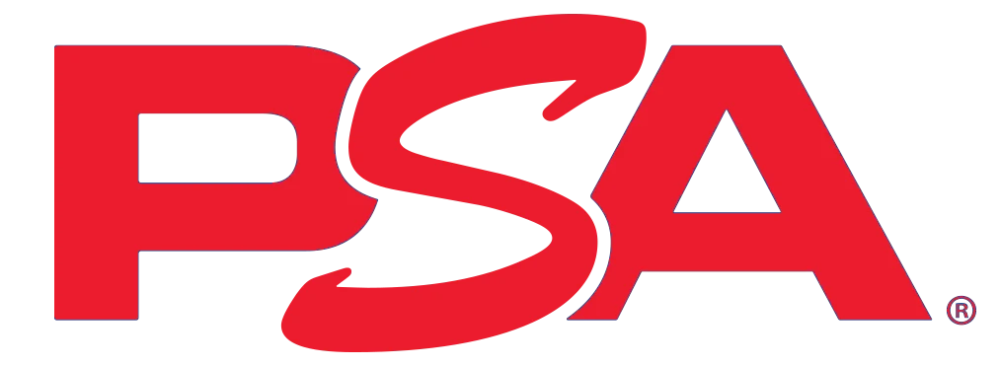

Sports cards, Pokemon cards, Marvel cards. A hobby for anyone interested in sports, movie Ip's, fun little characters and more. from football to Hocky. From Pokemon to Garbage patch kids. From Marvel to DC. These are only a fraction of different lines of trading cards. This website will primirily be teaching about sports cards, but there will be others scattered within.

Topps cars are curerntly, in my opion the number 1 company in the company as far as Sports and Ip's they produce product for.
To learn More on Topps.
Click Here

Panini is the second Main card company, they specialize more in sports
there are big differences between the 2 companies which you can learn about
on the all about panini page.
To learn More on Panini.
Click Here

PSA Grading company, The top company in the game with grading trustd by
the people although there are contraversy sroudn them they still stand at the top
To learn More on PSA and Grading.
Click Here